Tugas UTS Pengembangan Aplikasi Mobile · M. Ariel Davinsyah Putra · NIM 1247050122 · Kelas B · diperbarui 10 November 2026
Untuk pembaca non-teknis: aplikasi sudah diuji langsung di ponsel Android sungguhan. Semua 8 layar tampil dan berfungsi. Pengujian menemukan dua masalah tampilan, keduanya sudah diperbaiki dan diuji ulang di ponsel yang sama.
| Item | Keterangan |
|---|---|
| Perangkat uji | Ponsel fisik TECNO LG7n, Android 12, layar 720 x 1640, lewat USB debugging (adb) |
| Objek uji | APK debug app-debug.apk dari branch docs/screenshots-8-layar (sudah memuat dua perbaikan di bagian 4) |
| Hasil build | BUILD SUCCESSFUL gradlew.bat assembleDebug selesai 1m49s, exit code 0 (10 November 2026) |
| Verifikasi visual | LULUS 10 happy path, 5 negative path, 3 edge case. Semua dijalankan dengan tap dan ketik nyata di ponsel, posisi layar dicek lewat uiautomator dump dan dumpsys activity |
| Bug ditemukan | 2 (rotasi layar membuat isi tab tidak cocok, label tab aktif tidak terbaca). Keduanya FIXED |
| Audit keamanan | Lihat bagian 5 |
Data uji memakai nama dan alamat dummy. Kolom "cara verifikasi" menyebut bukti yang bisa dibuka di bagian 3.
| # | Langkah / aksi | Expected | Hasil aktual | Cara verifikasi |
|---|---|---|---|---|
| 1 | Buka aplikasi (SplashActivity) | Logo kopi, judul "Kopi dan Nyemil", tagline, tombol "Start now" | Lulus sesuai | Screenshot 01 |
| 2 | Tekan "Start now" (atau tunggu 3 detik) | Pindah ke layar Sign up | Lulus tanpa disentuh, layar pindah ke SignupActivity setelah sekitar 3 detik | Screenshot 02 + dumpsys activity |
| 3 | Sign up: tekan "Register" | Pindah ke layar Register | Lulus | Screenshot 04 |
| 4 | Isi nama lengkap, username, password lalu tekan "Register" | Masuk Home, sapaan memakai nama lengkap, back stack dibersihkan | Lulus sapaan "Halo, Ariel Davinsyah!", tombol back dari Home keluar aplikasi | Screenshot 05 + dumpsys activity setelah back |
| 5 | Home: amati daftar menu | 5 kartu menu lengkap dengan harga | Lulus Kopi Susu Gula Aren, Donat Cokelat, Sourdough Loaf, Cappuccino, Matcha Latte | Screenshot 05 |
| 6 | Alur Login (dari Sign up tekan "Login", isi field, tekan "Login") | Masuk Home dengan sapaan memakai username | Lulus sapaan "Halo, arielputra!" | Screenshot 03 + bukti 06-login-home |
| 7 | Tab Order: isi nama, alamat, patokan, tekan "Order dan Kirim" | Pindah ke Konfirmasi Pesanan | Lulus nama terisi otomatis dari profil | Screenshot 07 |
| 8 | Konfirmasi: periksa pesan sukses dan ringkasan alamat | Nama, alamat, dan patokan yang barusan diisi tampil di kartu ringkasan | Lulus | Screenshot 08 |
| 9 | Tekan "Oke" | Kembali ke Home, tab Home aktif (bukan tab Order) | Lulus nav_home selected=true | Bukti 09-setelah-oke + uiautomator dump |
| 10 | Tab Profile: ubah nama, tekan "Save" | Toast "Profil tersimpan", sapaan Home ikut berubah | Lulus sapaan berubah jadi "Halo, Ariel Putra!" di Profile dan Home | Bukti 10-profile-save |
| # | Langkah / aksi | Expected | Hasil aktual | Cara verifikasi |
|---|---|---|---|---|
| N1 | Login: tekan "Login" dengan semua field kosong | Error "Username wajib diisi" dan "Password wajib diisi", tetap di layar | Lulus | Bukti n1-login-kosong |
| N2 | Register: tekan "Register" dengan username kosong | Error di field kosong, tidak masuk Home | Lulus "Username wajib diisi", tetap di RegisterActivity | Bukti n2-register-username-kosong |
| N3 | Order: tekan "Order dan Kirim" dengan alamat dan patokan kosong | Error di field yang kosong, tidak lanjut konfirmasi | Lulus "Alamat wajib diisi" dan "Patokan wajib diisi" | Bukti n3-order-kosong |
| N4 | Profile: kosongkan nama, tekan "Save" | Error "Nama wajib diisi", nama lama tetap dipakai | Lulus sapaan tetap "Halo, Ariel Davinsyah!" | Bukti n4-profile-kosong |
| N5 | Tekan tombol back fisik di layar Konfirmasi | Kembali ke aplikasi dengan tab Home aktif | Lulus nav_home selected=true | Bukti n5-back-konfirmasi |
| # | Situasi | Expected | Hasil aktual | Cara verifikasi |
|---|---|---|---|---|
| E1 | Nama 59 karakter ("Muhammad Ariel Davinsyah Putra Pratama Wijaya Kusumaningrat") | Sapaan membungkus rapi, layout tidak pecah | Lulus sapaan turun ke 3 baris, kartu menu tetap utuh | Bukti e1-nama-panjang |
| E2 | Rotasi layar ke landscape saat mengisi form Order | Tetap di tab Order, teks yang sudah diketik bertahan | Gagal sebelum fix: tab Order menyala tapi isi layar Home. Lulus setelah fix: tetap di form Order, alamat "Jl. Rotasi No. 7" bertahan, form bisa di-scroll sampai tombol | Bukti e2-rotasi-landscape, e2-rotasi-scroll |
| E3 | Aplikasi ditutup paksa (am force-stop) lalu dibuka | Sesi kembali ke awal (tanpa database sesuai ketentuan tugas) | Lulus mulai dari Splash, lanjut ke Sign up | dumpsys activity setelah relaunch |
Semua gambar adalah tangkapan layar asli dari ponsel (adb shell screencap), tidak diedit. Delapan layar utama juga dipakai di README.
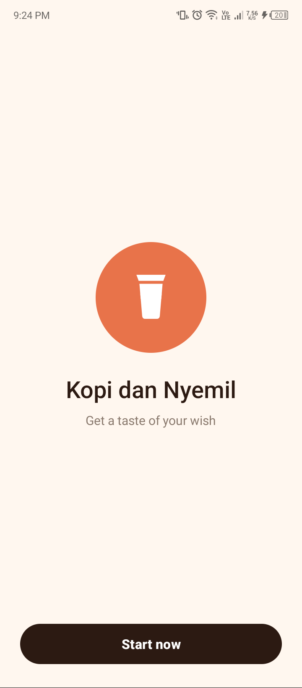
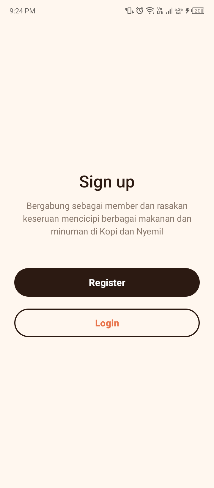
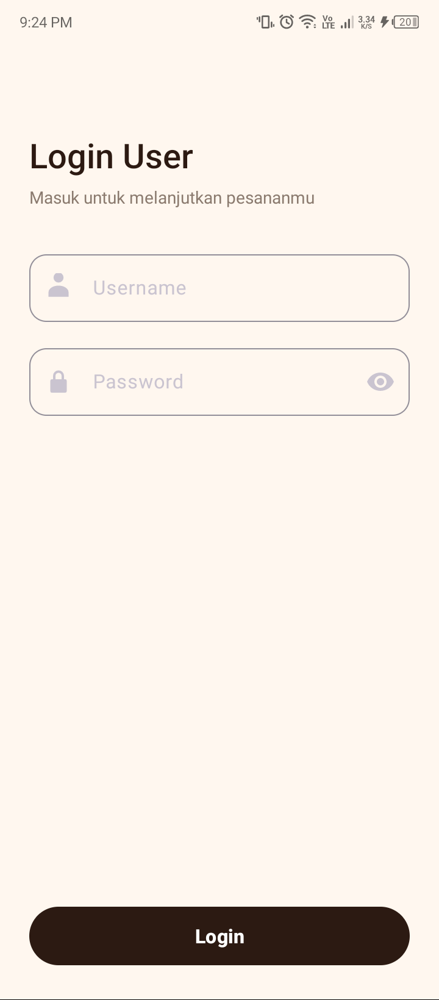
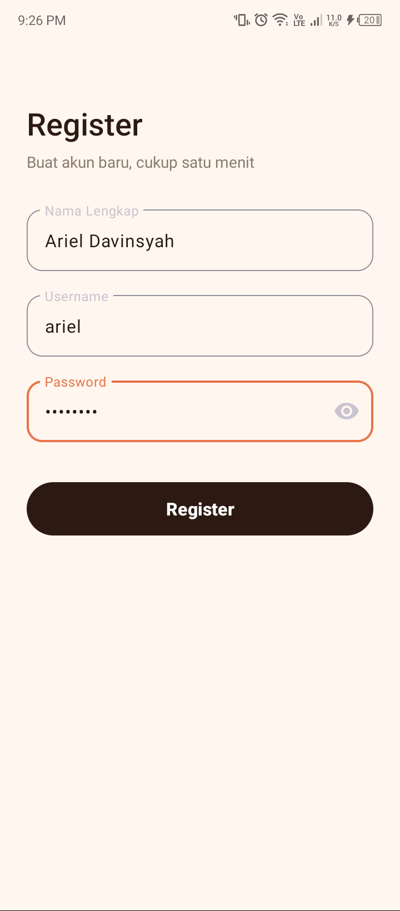
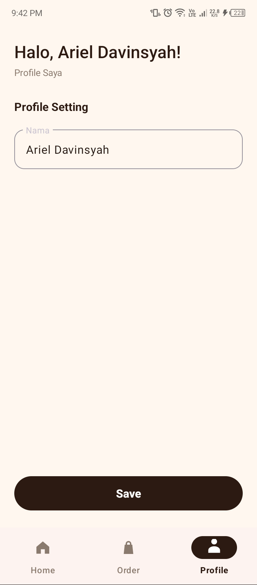
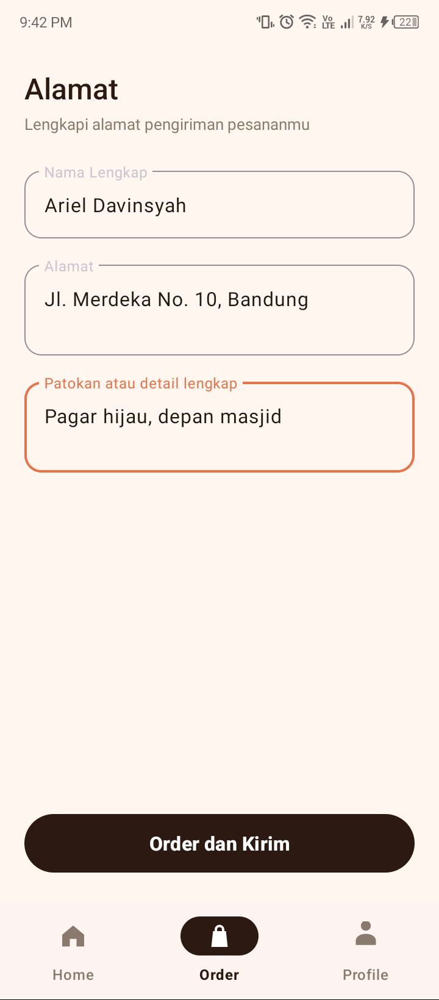
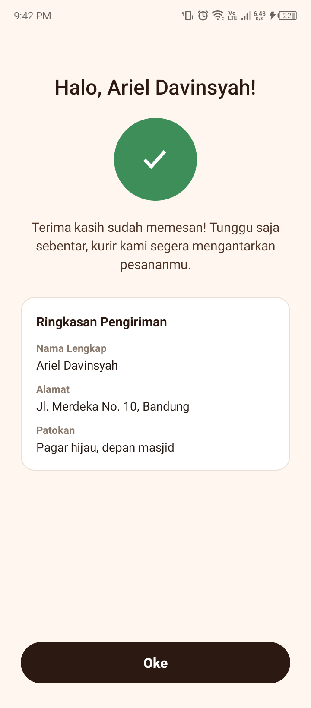
Bukti 09, 10, N4, dan E1 diambil sebelum perbaikan label tab, jadi label tab aktif di gambar itu masih pudar. Perilaku yang diuji tidak terpengaruh perbaikan tersebut.
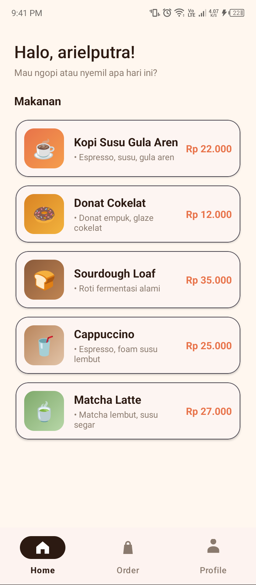
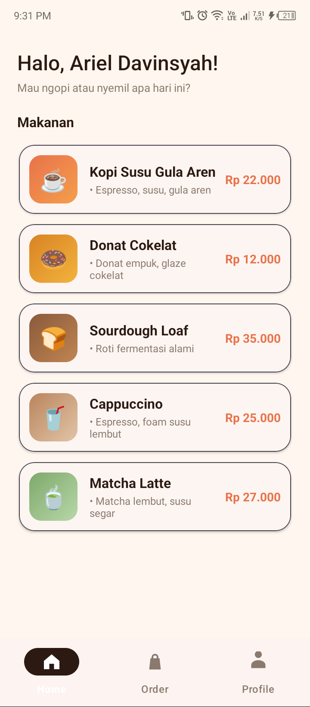
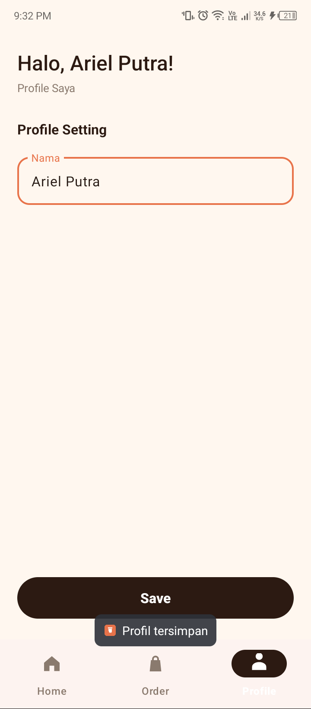
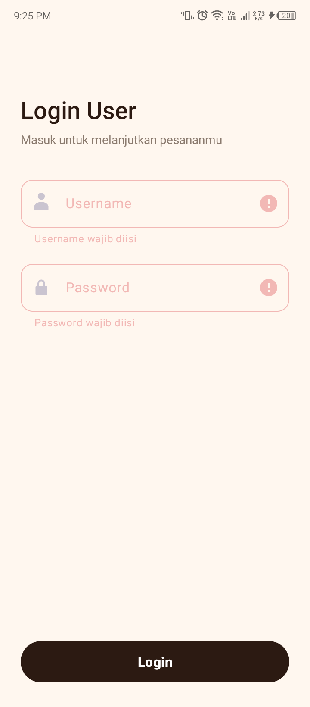
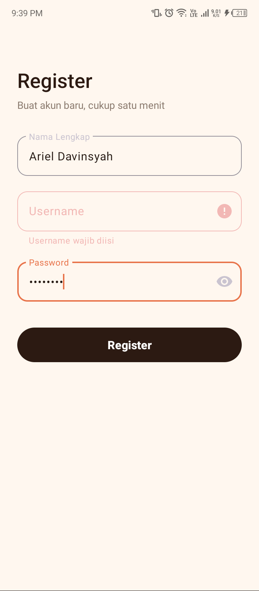
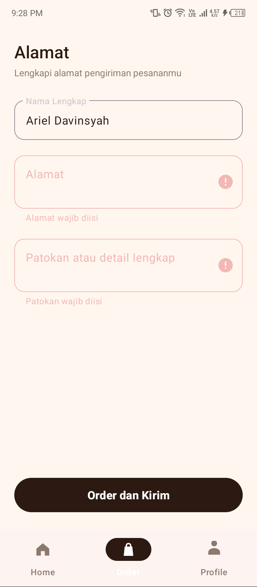
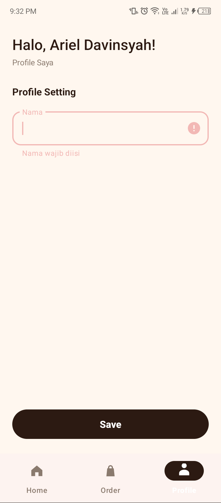
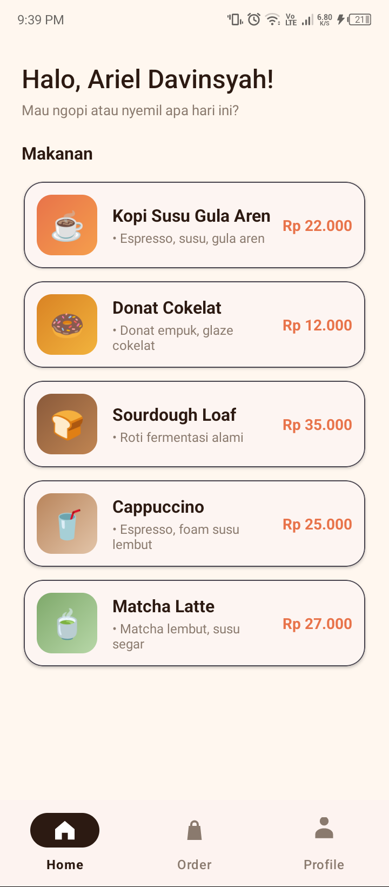
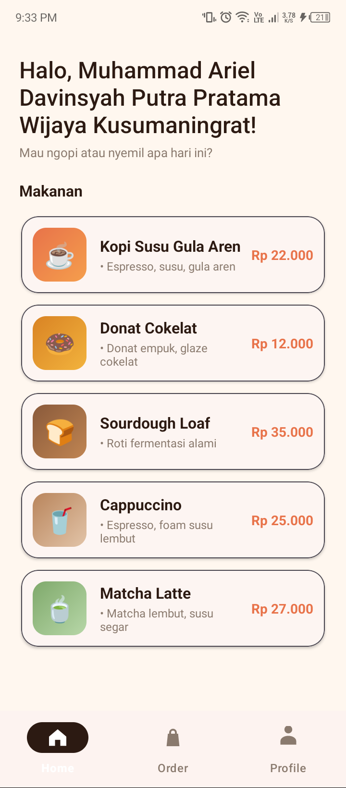
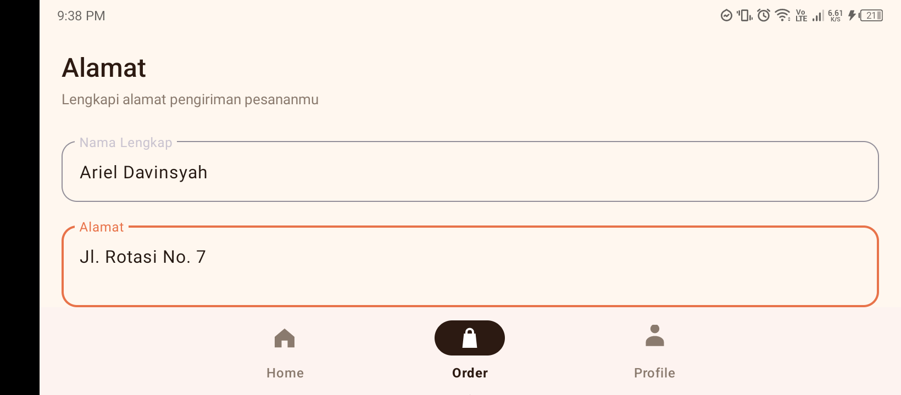
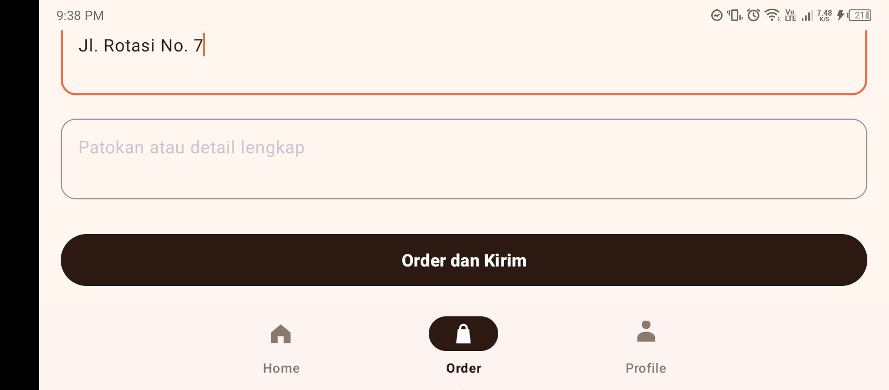
Tiap baris adalah bug nyata yang pernah muncul. Kolom terakhir menjelaskan cara memunculkannya lagi, supaya bisa dicek tidak terulang.
| Pemicu | Gejala | Root cause | Expected setelah fix | Cara reproduce (sebelum fix) |
|---|---|---|---|---|
Build pertama assembleDebug |
BUILD FAILED pada task processDebugResources |
Layout activity_main.xml memakai attribute app:itemActiveIndicatorTint yang tidak ada di Material Components; cara yang benar adalah styling lewat itemActiveIndicatorStyle |
Build lulus, tab aktif bottom nav tampil sebagai pil gelap | git checkout 82dc6b2 -- app/src/main/res/layout/activity_main.xml lalu jalankan gradlew.bat assembleDebug (fix ada di 0473378) |
| Skenario E2: putar layar saat berada di tab Order atau Profile | Bottom nav menyalakan tab Order, tapi isi layar menampilkan Home. Pengguna kebingungan karena form yang sedang diisi seperti hilang | MainActivity.onCreate selalu menyiapkan ulang fragment dan memaksa selectedItemId = nav_home. Saat activity dibuat ulang karena rotasi, bottom nav memulihkan pilihannya sendiri (Order) tanpa memanggil listener, sementara fragment yang tampil sudah dipaksa ke Home |
Inisialisasi hanya saat savedInstanceState == null. Setelah rotasi, tab dan isi layar tetap Order, teks form bertahan |
Buka tab Order, isi alamat, lalu adb shell settings put system accelerometer_rotation 0 dan adb shell settings put system user_rotation 1 |
| Melihat bottom nav di layar mana pun | Label tab yang aktif ("Home", "Order", "Profile") hampir tidak terlihat | Selector tab_item.xml memberi warna putih saat terpilih untuk ikon dan label. Di Material 3 pil gelap hanya membungkus ikon, jadi label putih jatuh di atas latar putih |
Label memakai selector baru tab_label.xml (espresso saat aktif, abu saat tidak). Ikon tetap putih di atas pil |
Kembalikan app:itemTextColor="@color/tab_item" di activity_main.xml, build, lalu lihat tab aktif |
error di doAfterTextChanged tiap field.Audit dijalankan oleh agent keamanan sebelum commit pertama dan diulang untuk perubahan di laporan ini.
.github-account.md (penunjuk akun lokal) ter-ignore.allowBackup=false, pola *.jks/*.keystore/keystore.properties di .gitignore.MainActivity.kt tidak memproses input eksternal, manifest tidak berubah (hanya SplashActivity exported), dependency tidak berubah, app/build/ tidak ter-track. Ke-19 screenshot dibuka satu per satu: hanya berisi data dummy, password tersamar, status bar tanpa notifikasi atau akun pribadi, dan tanpa metadata PNG.| Layar / varian | Build | Audit kode | Verifikasi visual (ponsel) |
|---|---|---|---|
| 1. Splash / Welcome | OK | OK | OK |
| 2. Sign Up | OK | OK | OK |
| 3. Login | OK | OK | OK |
| 4. Register | OK | OK | OK |
| 5. Home + 5 item menu | OK | OK | OK |
| 6. Profile | OK | OK | OK |
| 7. Alamat Pengiriman (Order) | OK | OK | OK |
| 8. Konfirmasi Pesanan | OK | OK | OK |
| Bottom navigation 3 tab | OK | OK | OK setelah fix label |
| Orientasi portrait | OK | OK | OK |
| Orientasi landscape (form Order) | OK | OK | OK setelah fix rotasi |
Belum diuji: emulator atau ponsel dengan versi Android lain, layar tablet, dan mode gelap sistem. Pengujian ini memakai satu ponsel Android 12.